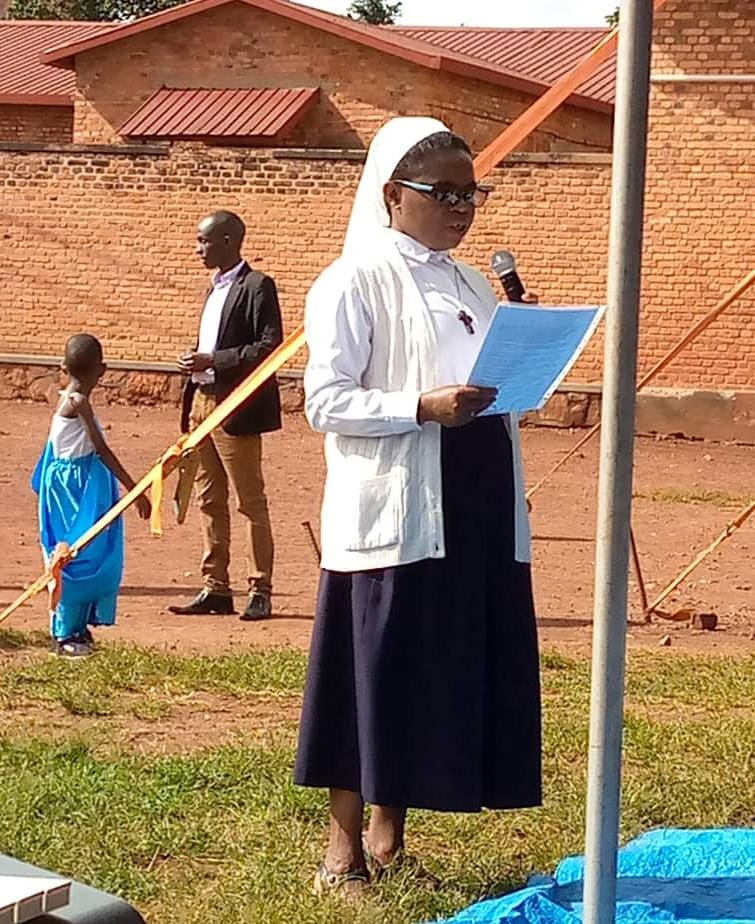

here there is the some images of administration and studeent:confident, compassionate young individuals, equipped with the skills to navigate their communities, their educational journeys, and their lives with grace and confidence. Our faculty members are not only passionate educators but also experts in their fields and the developmental stages they teach. They form a supportive alliance with students, fostering a collaborative spirit and mutual respect. At Capitol Hill Day School, teachers and students together celebrate each other’s unique strengths, creating a vibrant and inclusive learning community.  | |||
|
25353553344 5r4574574545 575644656556 Email:streo@gmail.com streo©2009 | |||